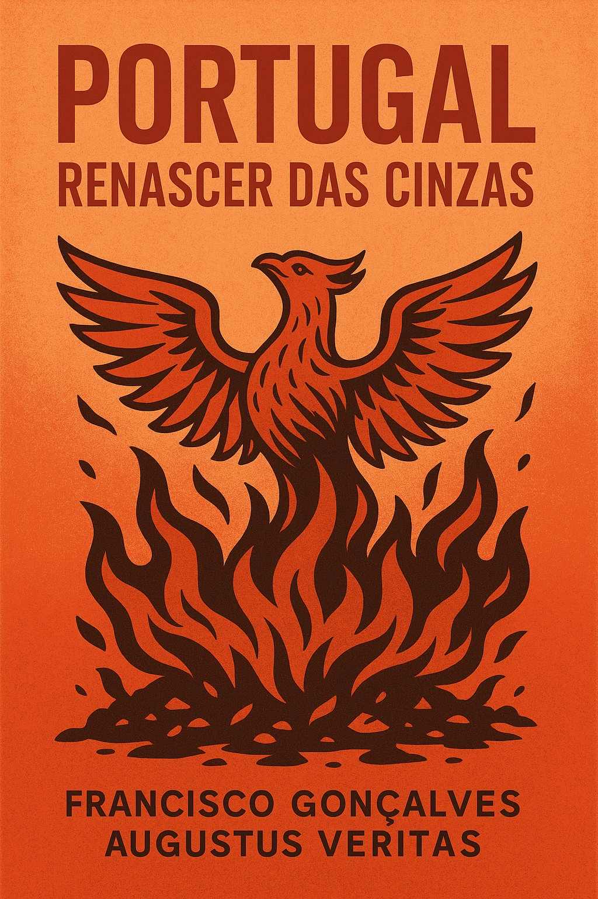

📚 Visita também a Biblioteca Fragmentos do Caos para mais obras livres e incendiárias.
Um manifesto direto, poético e crítico sobre o renascimento de Portugal.
📖 O que encontrarás neste livro? Um diagnóstico claro e poético da cleptocracia, da injustiça e da pobreza organizada. Um olhar apaixonado e estratégico sobre o que resta: as brasas do povo, da juventude e da criatividade. Uma proposta firme para refundar Portugal: uma nova constituição popular, um Estado transparente, uma pátria justa, tecnológica e verde.
Por Francisco Gonçalves e Augustus Veritas.
📚 Visita também a Blog Fragmentos do Caos para mais obras livres e incendiárias.